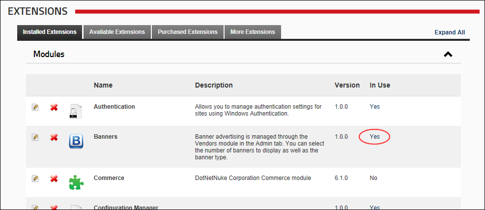
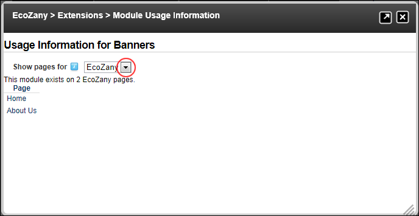

Viewing Detailed Module Usage Information
How to view which modules are in use on a DNN installation, which sites they are in use on, as well as how many instances and on which pages. The Host is able to view this information across all sites.
- Navigate to Host >
 Extensions.
Extensions.
- Select the Installed Extensions tab.
- Expand the Modules section.
- In the In Use column, a Yes link is displayed beside each module that is in use on this site. This opens the Module Usage Information page for the selected module.

- At Show Pages For, select a site name to view all instances of the module on that site - OR - Select Host to view all instances of the module on the Host pages of this DNN installation. This displays a list of all pages where the module is located.

- Optional. In the Page list, click on the Page Name link to visit that page.